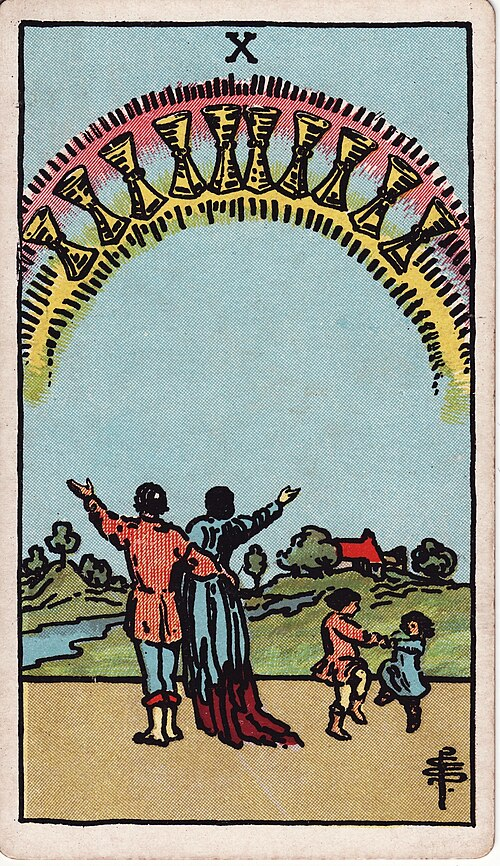

| Arcana | Minor |
| Suit | Cups |
| Element | Water |
| Attribution | Mars in Pisces |
Ten of Cups
In shortLasting happiness, with other people in it.
Upright
This is the full version of what the suit has been reaching for: family, home, belonging, happiness that includes other people and holds up over time. It is idealistic and the card knows it, but where it turns up the ideal is genuinely within reach or already quietly present.
Reversed
The picture and the reality do not match. Family strain, a home that looks right and does not feel right, or an idea of happiness you inherited rather than chose. It asks whether you are chasing your version of this or somebody else's.
The turn
Define your own version of this picture, in detail, before chasing anyone else's.
Reading with your own deck?
Sage records the cards you actually pull, writes the reading, keeps every one, and shows you what keeps returning across them. Free, private, no account.